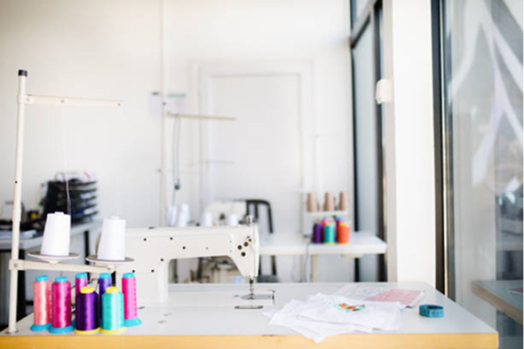
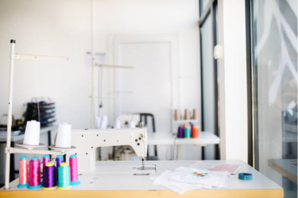

At Seams Creative, everything starts with a love for craftsmanship and a passion for personalization. Founded by Sandra, a lifelong designer and sewing enthusiast, Seams Creative brings custom ideas to life—one stitch at a time.
From a young age, Sandra found joy in creating by hand. Today, that passion has grown into a vibrant business offering custom embroidery, one-of-a-kind gifts, and specialty products made with care and creativity.
Our studio is powered by advanced embroidery technology and a hands-on approach, allowing us to design and deliver custom items that feel truly personal.
Beyond the studio, Sandra is also an avid Harley-Davidson rider. Inspired by her time on the road, she developed CycleSkyns—protective neoprene covers designed to shield motorcycle finishes during service and storage.
And that’s not all—when the nationally touring band Riders in the Sky needed a custom accessory, Sandra created the CacTie, a unique piece that’s now part of their signature style.
At Seams Creative, your ideas fuel our inspiration. Whether you’re looking for a thoughtful gift, standout branding, or a custom design just for you, we’re here to help you create something unforgettable.
 


The absolute best in San Diego. Have dealt with quite a few embroiderers for different items in the military, and Seams Creative is unmatched. The quality is great and you will not receive better customer service. Can’t wait to work with Sandy again. ZacSeessa
Asked Sandy to add name and major on my stole and it came out perfect! Great communication regarding thread color, sizing, and placement. Also went the extra mile to take the stole apart so that the embroidery could only be seen from the front. Price was reasonable, job was done efficiently, and also picked up and dropped off the stole for me. Nguyeen

Sandy is amazing! She embroidered names and sewed patches on shirts for me. Her turnaround time is quick, her work impeccable, prices very reasonable, and she even offers local pickup and drop off services! Anna Machartniak